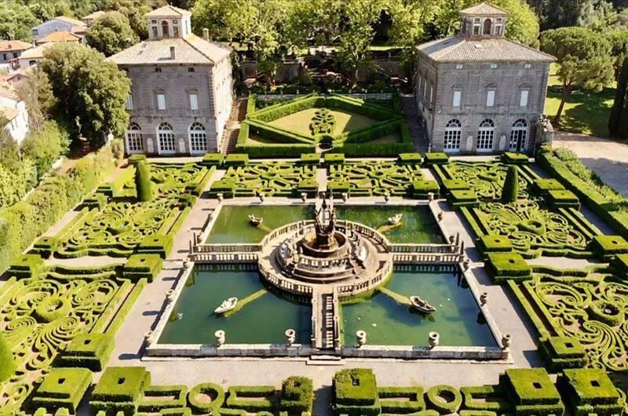

Villa Lante di Bagnaia is one of the most remarkable examples of an Italian Renaissance garden and an important cultural heritage site represented in the ArCo Knowledge Graph. This project investigates how the semantic description of Villa Lante can be enriched by integrating additional information from reliable external sources.
The proposed enrichments complement the existing knowledge graph without modifying the original ArCo dataset. By identifying missing information and representing it through RDF and SPARQL CONSTRUCT queries, the project demonstrates how semantic technologies can provide a more complete and meaningful description of a cultural heritage asset.
The project focuses on three main areas of enrichment:

The objective of this project is to identify knowledge gaps in the ArCo description of Villa Lante and propose semantic enrichments based on authoritative external sources.
For each identified gap, RDF triples were generated through SPARQL CONSTRUCT queries following the ArCo ontology. These proposed enrichments preserve the existing knowledge graph while extending it with additional contextual information concerning digital heritage resources, conservation activities, and historical events.
This project demonstrates how semantic enrichment can improve the completeness, accessibility, and contextual understanding of cultural heritage data, contributing to a richer representation of Villa Lante within the ArCo Knowledge Graph.